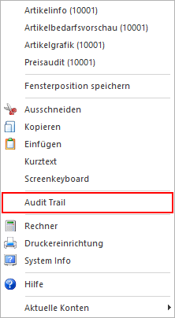
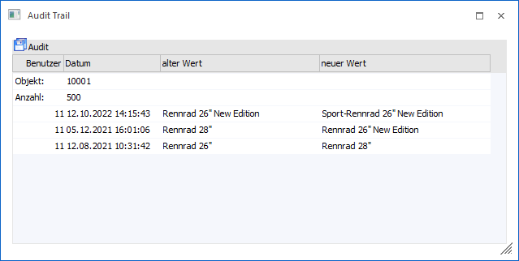
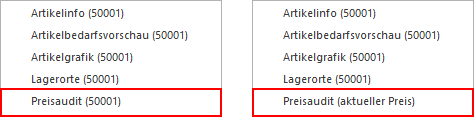
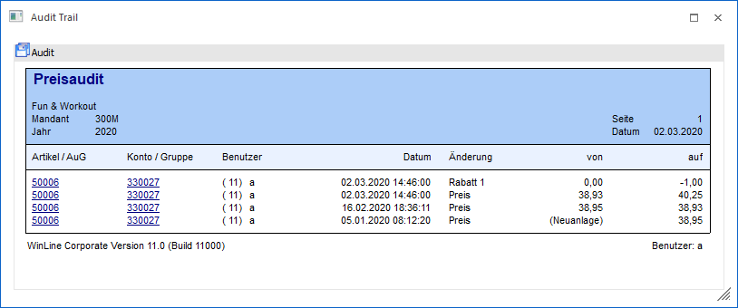

Im Programm WinLine ADMIN im Menüpunkt
1 Audit
1 Variablen Audit
gibt es die Möglichkeit, Stammdatenänderungen protokollieren zu lassen. Dadurch kann gewährleistet werden, dass alle Änderungen von Stammdaten nachvollziehbar sind.
Die Auswertung dieses Datenaudits kann auf zwei Arten erfolgen.
ü Eigener Menüpunkt
Im Programm
WinLine START kann das Audit über die Auswertung "Auditprotokoll Daten" (WinLine
START - Optionen - Auditprotokoll Daten) jederzeit ausgegeben werden.
ü Aufruf aus dem
Stammdatenbereich
Die zweite Variante ermöglicht es, das Audit direkt aus dem
Stammdatenbereich aufzurufen, wo das Protokoll erstellt wurde. Hierbei werden
die Veränderungen des aktuell gewählten Felds (bezogen auf das aktuelle Objekt,
Mandant und Wirtschaftsjahr) angezeigt.
Vorgangsweise - Aufruf aus dem Stammdatenbereich
In jedem Eingabefeld eines Stammdatenfensters, für welches das Datenaudit aktiviert wurde, kann durch Anklicken der rechten Maustaste und Anwahl der Funktion "Audit Trail" das Datenaudit für dieses Eingabefeld abgerufen werden.

Dadurch wird das Fenster "Audit Trail" geöffnet, in welche alle Änderungen angezeigt werden, welche dieses Eingabefeld betreffen (bezogen auf das aktuelle Objekt, Mandant und Wirtschaftsjahr).

In der Tabelle stehen folgende Eingabefelder und Informationen zur Verfügung:
Ø Objekt
An dieser Stelle wird die Nummer des zu überprüfenden Objekts (aktuelle Personenkonto, Artikel, Kostenstelle, etc.) angezeigt. Es handelt sich hierbei um ein Eingabefeld, d.h. es können auch andere Objekte betrachtet werden, wobei kein Matchcode zur Verfügung steht. Wird das Feld geleert, so werden alle Veränderung des Ausgangsfelds, unabhängig vom Objekt, angezeigt.
Hinweis
Wird das Audit Trail aus der Preistabelle des Artikelstamms heraus geöffnet, so steht das "aktuelle Objekt" nicht im Zugriff. D.h. es werden alle Preisänderungen, unabhängig vom Objekt, ausgegeben. Aus diesem Grund sollte bei Preisen die Funktion "Preisaudit" genutzt werden (nähere Information siehe "Hinweis - Preisaudit").
Ø Anzahl
Im Standard werden die letzten 500 Änderungen angezeigt. Die Anzahl kann editiert werden, wobei durch Hinterlegung von "0" alle Veränderungen angezeigt werden.
Ø Spalten "Benutzer" / "Datum" / "alter Wert" / "neuer Wert"
Neben der Benutzernummer und dem Änderungsdatum wird der "alte Wert" und der "neue Wert" angezeigt. Hierdurch lässt sich leicht nachvollziehen, wer wann welche Änderung durchgeführt hat.
Ø Spalte "Benutzername" (optional)
In der optionalen Spalte "Benutzername" wird das Login und der Name des Benutzers der Änderung angezeigt.
Ø Spalte "Objekt" (optional)
In der optionalen Spalte "Objekt" wird das Objekt der Zeile (inklusive Mandant und Wirtschaftsjahr) angezeigt.
Hinweis - Preisaudit
Neben dem Auditieren von Stammdaten steht in der WinLine die Möglichkeit zur Verfügung, alle Veränderungen am Preis protokollieren zu lassen. Auch dieses wird über das "Variablen Audit" (WinLine ADMIN - Audit - Variablen Audit - Tabelle "043 - Preisliste") aktiviert.
Neben dem Auswertungsprogramm "Preisaudit" (WinLine FAKT - Auswertungen - Artikelliste - Preisaudit) kann dieses Audit über die rechte Maustaste im Artikelstamm aufgerufen werden. Hierbei wird zwischen allen Einträgen des Artikels (rechte Maustaste irgendwo in den Artikelstamm) und Einträgen eines speziellen Preises (rechte Maustaste auf den Preislisteneintrag) unterschieden.

Durch Anwahl dieses Eintrages wird die Auswertung des Preisaudits gestartet und automatisch auf den "aktuellen" Artikel eingegrenzt.
Steht der Fokus in der Preistabelle (Register "Preise" - Unterregister "Preise" bzw. Register "Lieferanten"), so wird das Preisaudit zusätzlich auf die markierte Preiszeile eingegrenzt.

Button
Ø Ende
Durch Anwahl des Buttons "Ende" bzw. der Taste ESC wird das Audit-Fenster geschlossen.